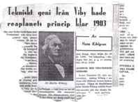
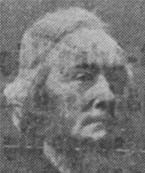

|
Martin Wiberg
Om man färdas
landsvägen mellan Kristianstad och Åhus över Rinkaby pas serar man genom
Gustaf Adolfs socken. På det lilla backkrönet av vägen innan Gustaf Adolfs
kyrka passeras låg för hundra år sedan en bondgård på vägens vänstra sida,
som ägdes av lantbrukaren Ola Jeppsson och hans hustru Elna Trulsdottér. I
deras äktenskap föddes nio barn, av vilka det andra barnet, Martin, här
skall ägnas några minnesord. Martin samt hans fem bröder antog namnet
Wiberg efter sin hemort Viby.
Redan som liten pojke röjde Martin Wiberg ett ovanligt gott förstånd,
varför föräldrarna, trots sin önskan att Martin skulle övertaga
fädernegården Viby n:r 6, satte honom i Kristianstads läroverk. Martin
Wiberg föddes den 4 sept 1826 och blev student 1845 samt inskrevs vid
Lunds universitet, där han 1850 disputerade för filosofiska graden och
promoverades till fil. doktor. Han erhöll under hand meddelande om att han
kunde påräkna docentur i filosofi, vilket erbjudande han dock avböjde for
att kunna helt ägna sig åt sina uppfinningar.
RÄKNEMASKIN GJORDE
WIBERG VÄRLDSBERÖMD.
Den uppfinning, som med ett slag gjorde Martin Wiberg internationellt
berömd, var räknemaskinen. En räknemaskin fanns redan, konstruerad av
tvenne fransmän. Den var, enligt Wibergs åsikt, ej ändamålsenlig, varför
Wiberg konstruerade en dylik efter delvis andra principer. Orsaken kanske
var att de logaritmtabeller, femsiffriga, som uträknats med i den
förstnämnda i några fall visat felaktigheter. Wiberg räknade då ut
sjusiffriga tabeller med sin räknemaskin. Dessa tabeller översattes sedan
till tyska, engelska och franska språken. Som medhjälpare vid det oerhörda
arbete som detta krävde hade Martin Wiberg sina tre yngsta bröder.
KUNG OSCAR INGICK
SOM INTRESSENT.
För att finansiera arbetet fordrades pengar. Dåvarande hertigen av
Östergötland, sedermera konung Oscar II ingick som intressent i det s. L
Wibergska Tabellbolaget — vari även en hel del vetenskapsmän och mecenater
funnos. När räknemaskinen, efter 12 års arbete var färdig erhöll han 1860
ett honorarium av svenska statsmakterna. Vetenskapsakademien hade förordat
ett anslag av kr. 3.000 i sitt riksdagsäskande, men Kungl. Maj:t höjde det
till kr. 5.000. Vid behandling i riksdagen blev .det, p. g. av motion,
höjt till kr. 8.000.
AUDIENS HOS
FRANKRIKES KEJSARE. !
Kejsar Napoleon III, själv matematiker, mottog Wiberg i audiens och
tilldelade honom hederslegionen. Någon tid dessförinnan hade Martin Wiberg
erhållit Nordstjärneorden och den danska Dannebrogen. Vår store uppfinnare
John Ericsson yttrade om Wibergs» uppfinning att det var »den största
triumf av det menskliga förståndet ofver materien».
Närmast ofattbart förefaller det att en man som ansetts ha en lysande bana
utstakad för filosof i stället blev ett sådant geni av rang. Att här
försöka räkna upp eller beskriva alla de uppfinningar som Martin Wiberg
fullbordade skulle föra alldeles för långt, utan det måste bli ett axplock
bland dem.
1865 provades en cigarrmaskin, 1833 provkördes ett lokomotiv med en av
honom konstruerad broms och 1868 började hans maskin för tillverkning av
tändsticksaskar att användas. Vid denna tid uppfann han den s. k.
gräddsättaren, en separator som fick god avsättning samt mekaniskt
självtömmande brevlådor som ännu användes och som funnit avsättning även
utomlands.
SVENSKA ARMÉN SADE NEJ TILL SNABBSKJUTANDE GEVÄR.
Rent paradoxalt finner vi, senare tiders barn, motiveringen avslag på
Martin Wibergs erbjudande att förse svenska armén med ett nytt
bakladdningsgevär, att detta automatgevär var oanvändbart enär det var
alldeles snabbskjutande och skulle förorsaka ammunitionsslöseri. I våra
dagar har vi upplevt både kulsprutor, kulsprutepistol m. m.
En ny sättmaskin konstruera under stora ekonomiska uppoffringar och
underhandlingar försäljning av patentet till ett engelskt tryckeri voro
nästan avslutade då tryckeriets arbetare hotade med strejk om maskinen
inköptes p. g. av sina arbetsbespararande principer. På 1870-talet visade
Wiberg en bottenskrapa för upptagandet av växter och djur från havsbotten.
A. E. Nordenskjöld som hade den med sig på sin upptäcktsfärd, förklarade
vid sin hemkomst att den fungerat så förträffligt att det nästan förargat
honom.
NORDENSKIÖLD OCH NOBEL BEGEISTRADE
Med utgångspunkt från att ljusets inverkan på synsinnet under vissa
betingelser borde kunna skapa lika behagliga sensationer för ögat som
toner för örat fick Wiberg idén till den s. k. färgtonsoperan, eller
spektralinstrument Alfred Nobel, som fick kännedom om idén och dess
principer, skriver följande:
Berlin den 27/5 1896
Herr Dr M. Wiberg,
Stockholm.
En färgtonsopera — det vore löjligt att skratta åt ett sådant förslag. Jag
anser idén vara utmärkt genial och originell. Då jag snart kommer till
Stockholm få vi talas vid om saken.
Med största högaktning
A. Nobel
Idén är så snillrik att jag inte nog kan gratulera dess upphovsman.
Kort därefter avled emellertid Nobel och planerna gingo därigenom om
intet.
Problemet flygmaskinen var honom ej heller främmande. Vid 77 års ålder
hade han principen klar med flygmaskinen — vilka principer mera liknade
reaplan än de första flygmaskiner av typen Bleriot o. a.
LÄKARNA SADE NEJ, WIBERG VAR EJ "FACKMAN".
Martin Wiberg sysslade ävenledes med vissa solstrålars välgörande inverkan
på olika hudåkommor. Här mötte han ej samma välvilliga stöd som Finsen,
utan avhånades av en del läkare under motivering att han ej var medicinsk
fackman. Brist på medel gjorde att de ekonomiska bekymmer som han haft att
kämpa emot under ett långt liv, märkvärdigt nog, aldrig bröt ner honom.
FOSTRADE 20 BARN ! UTAN BARNBIDRAG.
Nordisk Familjebok slutar sin artikel om Martin Wiberg med att han i
likhet med många andra uppfinnare var i avsaknad av ekonomiskt sinne.
Detta kan nog vara delvis riktigt men — betänk också den stora familj han
hade. Martin Wiberg var gift två gånger. I sitt första äktenskap hade han
fyra barn — men i sitt andra äktenskap föddes sexton (16) barn. Barnbidrag
är som bekant senare tiders påfund.
GENIETS VÄG ÄR OFTA TÖRNBESTRÖDD.
Bland andra uppfinningar, som Martin Wiberg uppfann kan nämnas en
kupéupp-värmningsapparat, som länge användes på svenska järnvägar, en
kaffeextraherings-apparat, s. k. remisskistor, använda av statens
järnvägar.
1901 erhöll Wiberg patent på sätt att behandla torv, för att öka värdet av
densamma som bränsle.
1903, vid 77 års ålder, erhöll han patent avseende, en luftmaskin, varmed
han visade sig ånyo vara inne på vägen mot reaplanet.
Av vad ovan anförts torde framgå att hans skarpa intellekt sträckte sig
över oerhört skilda områden, ävensom att den gamla satsen att en
uppfinnares väg är kanske en av de mest törnbeströdda, är riktig.
|
|

Martin Wiberg
fil. doktor, tekniskt snille och
20-barnsfar född i Viby 1826 |